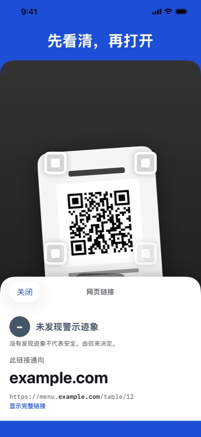
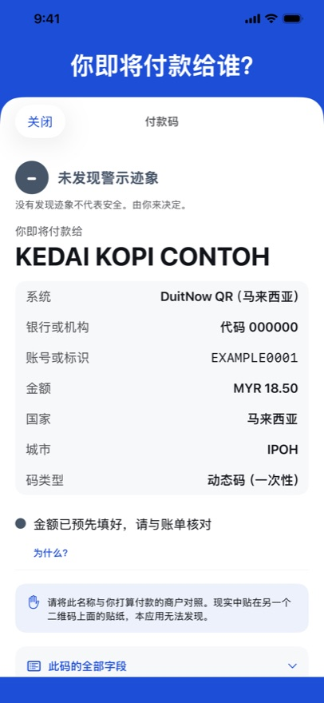
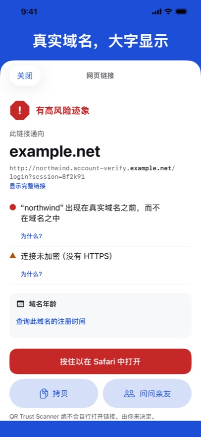

QR Trust Scanner 让你在点按之前先看到二维码或链接通向哪里：大字显示真实域名，指出值得再看一眼的地方；如果是付款码，还会显示钱付给谁。它绝不会自行打开任何内容，一切都在你的 iPhone 上完成。



真实域名，大字显示
链接可以在别人的地址前面加上任何熟悉的词。应用会先让你看到真实域名。
你即将付款给谁？
针对越南、巴西、印度尼西亚和马来西亚使用的 EMVCo 标准付款二维码：收款方、金额，以及二维码的校验值是否正确。
是迹象，不是结论
每条迹象都是一句平实的话，并附有“为什么？”。三个级别，由你决定。
即将登陆 App Store
我们使用的开放数据
- 警示名单：PhishDestroy “destroylist”（github.com/phishdestroy/destroylist），MIT 许可，© 2019 PhishDestroy。
- Public Suffix List（publicsuffix.org），Mozilla Public License 2.0。
- IANA：根区域名后缀列表与 RDAP 引导注册表。